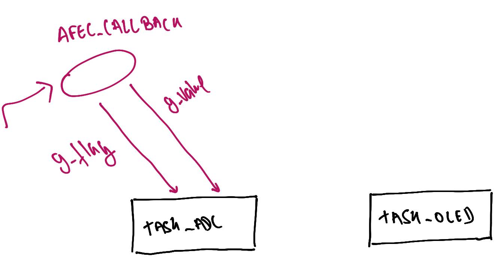
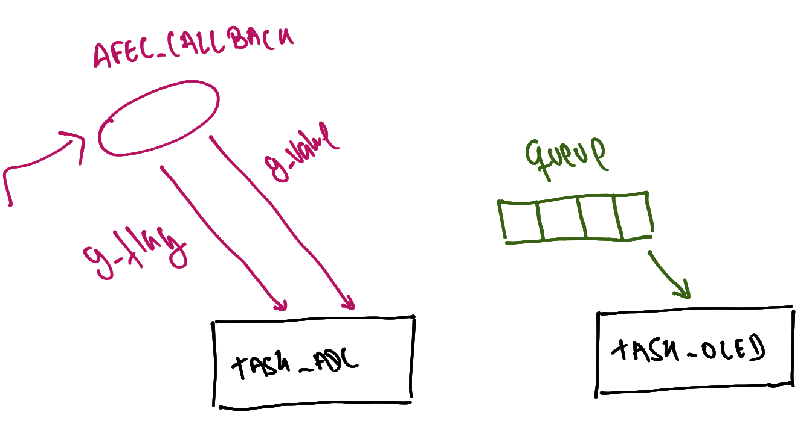
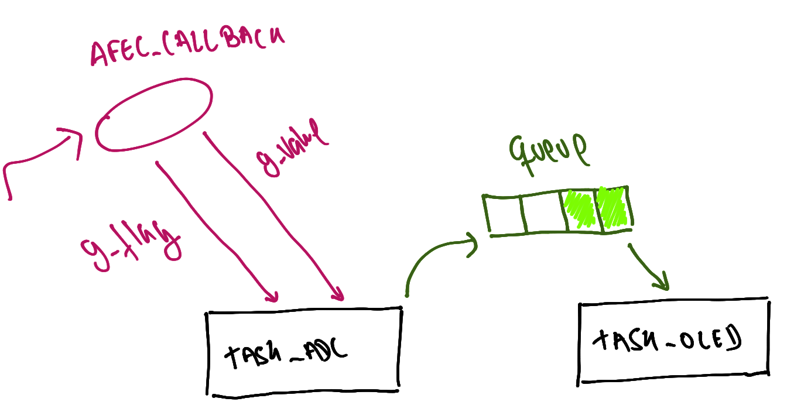
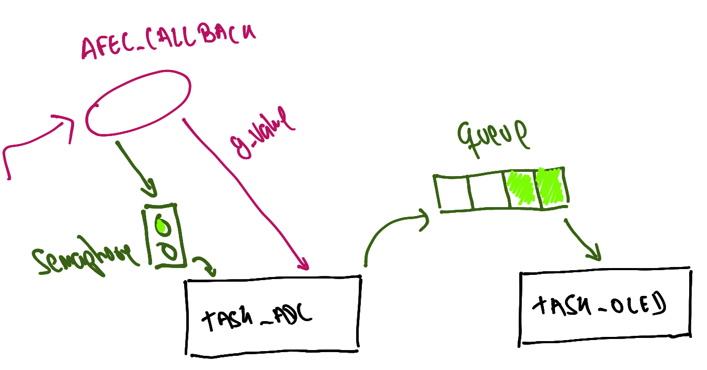
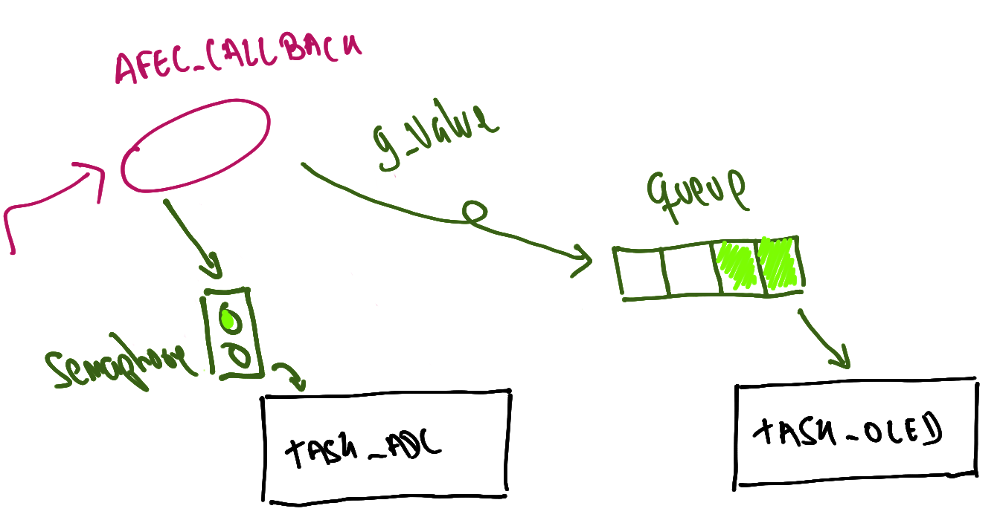

RTOS - ADC¶
Neste laboratório iremos trabalhar com conversão analógica digital, vamos aprender como usar um recurso do rtos chamado de fila.
LAB¶
| Pasta |
|---|
Lab6-RTOS-ADC |
- Executar exemplo conversão analógica
- Incorporar exemplo ADC no RTOS com OLED
- Estruturar tasks
- Criar
queuede comunicação entre IRQ e tasks
Início¶
Conexões
- EXT1: OLED
- Potenciômetro no PD30 conforme exemplo
SAME70-examples/Perifericos-uC/AFEC-Pin/
Código exemplo
- Atualizem o repositório SAME70-Examples antes de continuar
- Vamos usar como base o código Screens/RTOS-OLED-Xplained-Pro, copie para o seu repositório de entregas e renomeia para:
Lab6-RTOS-ADC
Exemplo AFEC¶
Abra o exemplo do AFEC-Pin localizado em SAME70-examples/Perifericos-uC/AFEC-Pin/, leia o README desse exemplo e o execute na sua placa.
Note
Note que será necessário conectar o potenciômetro ao kit, conforme indicação do README.
Incorporando AFEC ao RTOS¶
Vamos incorporar o exemplo do AFEC ao código do OLED com RTOS, para isso iremos criar uma tarefa que será responsável por ler o valor do AFEC.
Modifique
- Adicione no ASF o driver do
AFEC - Traga as funções, defines e variáveis globais do exemplo
AFEC-PIN- variáveis globais:
g_ definesconfig_afecAFEC_pot_Callback()
- variáveis globais:
- Compile o código para ver se está ok
Agora vamos criar uma task no RTOS para lidar com a leitura do AFEC, a tarefa vai ter a implementação a seguir:
void task_adc(void){
/* inicializa e configura adc */
config_AFEC_pot(AFEC_POT, AFEC_POT_ID, AFEC_POT_CHANNEL, AFEC_pot_Callback);
/* Selecina canal e inicializa conversão */
afec_channel_enable(AFEC_POT, AFEC_POT_CHANNEL);
afec_start_software_conversion(AFEC_POT);
while(1){
if(g_is_conversion_done){
g_is_conversion_done = 0;
printf("%d\n", g_ul_value);
delay_ms(500);
/* Selecina canal e inicializa conversão */
afec_channel_enable(AFEC_POT, AFEC_POT_CHANNEL);
afec_start_software_conversion(AFEC_POT);
}
}
}
Note que a task é praticamente igual ao main() do exemplo sem RTOS, isso está errado pois ainda usa delay_ms e fica verificando uma flag (g_is_conversion_done) no lugar de usar semáforo, mas serve como um bom começo.
Agora é necessário modificar a função main para que o freeRTOS crie essa tareafa:
/* Create task to handler LCD */
if (xTaskCreate(task_adc, "adc", TASK_LCD_STACK_SIZE, NULL, TASK_LCD_STACK_PRIORITY, NULL) != pdPASS) {
printf("Failed to create test adc task\r\n");
}
Modifique
- Crie a task
task_adcconforme exemplo - Inicialize a task no
RTOS - Abra o terminal e note que está funcionando!
Warning
- Essa task continua usando uma flag que é alterada do callback do AFEC para indicar quando o valor está pronto, isso não é bom e vamos mudar mais para frente!
- Usa
delay_msno lugar do vstaskDelay.
Diagrama

Melhorando¶
Agora vamos melhorar isso, começando por trocar o delay pelo delay do freertos.
Tarefa
- Substitua o
delay_mspelo delay do freeRTOS
Por que isso é importante?
queue¶
Mailbox/ queue é uma das maneiras de enviarmos dados entre tarefa em um sistema operacional, com ele podemos comunicar interrupção com tarefa e tarefa com tarefa, enviando valores (diferente do semáforo que só funciona de forma binária).
Note
Queues are the primary form of intertask communications. They can be used to send messages between tasks, and between interrupts and tasks. In most cases they are used as thread safe FIFO (First In First Out) buffers with new data being sent to the back of the queue, although data can also be sent to the front.
Writing to and reading from a queue. In this example the queue was created to hold 5 items, and the queue never becomes full.

Material retirado do site: https://www.freertos.org/Embedded-RTOS-Queues.html
Tip
Para mais informações ler o site do freeRTOS sobre filas:
Tip
Temos uma secção na nossa página de dicas com exemplo de fila:
https://insper.github.io/ComputacaoEmbarcada/Util-freertos/#fila
Modificando firmware¶
Iremos agora começar a modificar o firmware criando um fila para comunicar a tarefa task_adc com a tarefa task_oled.
Fila¶
Vamos criar um queue chamado de xQueueADC essa variável deve ser global (assim como fazíamos com o semáforo):
/************************************************************************/
/* RTOS */
/************************************************************************/
#define TASK_OLED_STACK_SIZE (6*1024/sizeof(portSTACK_TYPE))
#define TASK_OLED_STACK_PRIORITY (tskIDLE_PRIORITY)
+typedef struct {
+ uint value;
+} adcData;
+QueueHandle_t xQueueADC;
Tarefa
- Criei a struct
adcDatae a variável globalxQueueADC - Compile para ver se possui erros.
Modificando task_oled¶
Agora modifique a tarefa task_oled para alocar uma fila nesse "endereço", vamos também criar uma variável local da task chamada de adc para recebimento de dados dessa fila, e imprimir na tela o resultado:
void task_oled(void){
gfx_mono_ssd1306_init();
gfx_mono_draw_string("Exemplo RTOS", 0, 0, &sysfont);
+ xQueueADC = xQueueCreate( 5, sizeof( adcData ));
+ adcData adc;
for (;;) {
+ // Busca um novo valor na fila do ADC!
+ // formata e imprime no LCD o dado
+ if (xQueueReceive( xQueueADC, &(adc), ( TickType_t ) 100 / portTICK_PERIOD_MS)) {
+ char b[512];
+ sprintf(b, "%04d", adc.value);
+ gfx_mono_draw_string(b, 0, 20, &sysfont);
+ }
}
}
Tarefa
- Modifique a
task_oled - Compile para ver se possui erros.
Diagrama

Modificando task_adc¶
Agora precisamos modificar a task_adc para enviar o dado por essa fila:
void task_adc(void){
/* inicializa e configura adc */
config_AFEC_pot(AFEC_POT, AFEC_POT_ID, AFEC_POT_CHANNEL, AFEC_pot_Callback);
/* Selecina canal e inicializa conversão */
afec_channel_enable(AFEC_POT, AFEC_POT_CHANNEL);
afec_start_software_conversion(AFEC_POT);
+ adcData adc;
while(1){
if(g_is_conversion_done){
printf("%d\n", g_ul_value);
+ adc.value = g_ul_value;
+ xQueueSend(xQueueADC, &adc, 0);
vTaskDelay(500);
/* Selecina canal e inicializa conversão */
afec_channel_enable(AFEC_POT, AFEC_POT_CHANNEL);
afec_start_software_conversion(AFEC_POT);
}
}
}
Tarefa
- Modifique o código como indicado anteriormente
- Programe o uC
- Teste mudando o valor do potênciometro e verificando se o valor no oled muda.
Diagrama

semáforo¶
Agora vamos modificar o código para usar um semáforo para substituir a flag: g_is_conversion_done, esse semáforo precisa ser liberado na AFEC_pot_Callback e recebido na task_adc.
Tarefa
Substitua a flag g_is_conversion_done por um semáforo.
Dica: Você deve criar um semáforo, inicializar e enviar.
Diagrama

C - Dado direto do IRQ AFEC para a task_oled¶
Podemos fazer o envio do dado direto do AFEC_pot_Callback para a task_oled, para isso teremos que usar a função xQueueSendFromISR no lugar da xQueueSend.
Tip
Você sabia que pode alterar a fonte do OLED? De uma olhada no arquivo: src/config/conf_sysfont:
//#define USE_FONT_BPMONO_10x16
#define USE_FONT_BPMONO_10x14
/* #define USE_FONT_MONO_MMM_10x12 */
//#define USE_FONT_BASIC_6x7
Basta escolher entre define diferente.
Tarefa
- Faça o envio direto do callback do AFEC para a
task_oled - Programe e teste.
- Teste mudando o valor do potênciometro e verificando se o valor no oled muda.
Diagrama

B - Exibindo graficamente¶
Faça a exibição do potenciômetro de forma gráfica no oled.
A - Adicionando mais uma entrada analógica¶
No lugar de fazer apenas uma entrada analógica vamos fazer a leitura de dois valores, para isso vocês podem utilizar o joystick analógico que vocês possuem no kit.
Preencher ao finalizar o lab